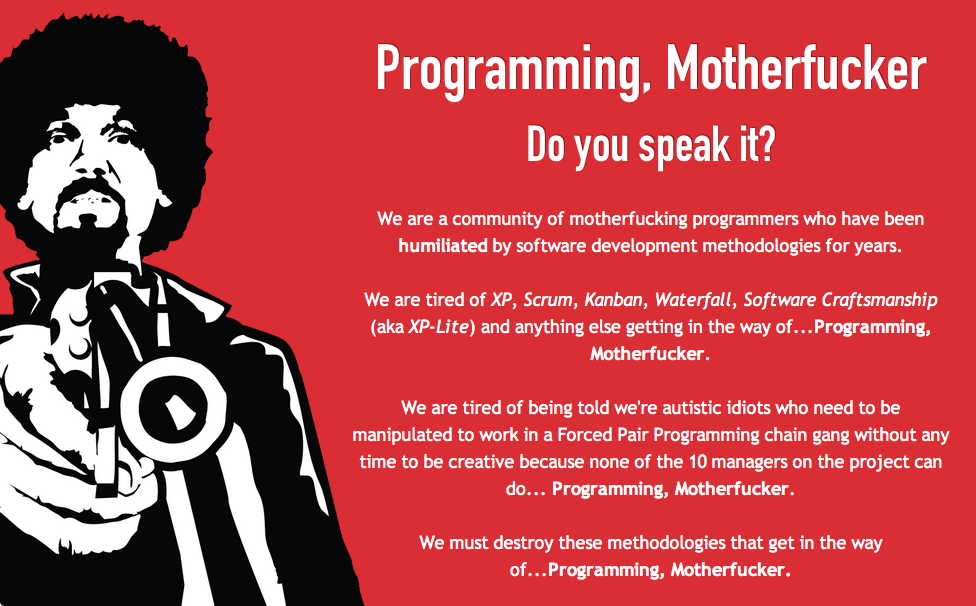

¡Programa CTM!
Ustedes dirán: “Eduardo, seguro que te encanta escribir, esa debe ser tu verdadera pasión.”. Y la verdad es que no están tan lejos, me gusta escribir, y preparar estos posts es una de las actividades más divertidas a las que me dedico, pero no, tengo una pasión mayor que escribir: programar. Realmente es lo que más me gusta. No creo ser un gran programador, pero creo estar sobre la media, y lo mejor es que sigo aprendiendo, cada día.
Hace poco una colega me comentaba que había conocido a un joven que estaba estudiando “ingeniería informática”, alguien le dijo: “que bueno que estudias eso, podrías trabajar con nosotros para terminar las aplicaciones que necesitamos!”, la respuesta orgullosa del joven fue: “¡no, no!, ¡ yo ya no meto las manos!”.
Bueno, eso es lo que está mal en nuestra industria, esa maldita actitud de “no querer meter las manos”, como si fueran a ensuciarselas (hay productos para limpiar los teclados, ¿sabían?).
Somos desarrolladores de software, ¡lo que hacemos es programar! Yo estoy en un puesto ejecutivo y, a pesar de que por la “dignidad del cargo” no debería hacerlo, “¡sigo metiendo las manos!”.
¡Es como que me dijeran que un neuro cirujano que estudio 10 años no operara! ¡O que un futbolista no metiera los pies!
El gran Edsger W. Dijkstra lo dijo claramente:
Así como la economía es conocida como “La Ciencia Miserable”,* la ingeniería de software debería ser conocida como “La Disciplina Condenada”, condenada porque ni siquiera puede acercarse a su meta, dado que la misma es en sí misma contradictoria. La ingeniería de software, por supuesto, se presenta a sí misma como otra causa valiosa, pero es un colirio: si lee cuidadosamente su literatura y analiza lo que realmente hacen quienes se avocan a ella, descubrirá que la ingeniería de software ha adoptado como su estatuto *“Cómo programar si usted no puede”
Lo que pasa es que hay mucha gente que es incapaz de programar, y por lo tanto deriva en la ingeniería de software, porque creen que con eso compensan su ineptitud, y así la industria se ha llenado de ineptos. Y por eso que hay crisis de software, y los desarrollos no salen, porque la poca gente que es buena termina subvencionando a los malos. Hemos construido nuestra crisis por ser buenas personas.
¡Ya basta de eso!, dejemos de aceptar la mediocridad, la ineptitud e incompetencia. Partamos por el proceso de selección: si usted necesita malabaristas, pídale que haga malabares enfrente de usted, antes de contratarlos.
Lo otro son las metodologías. Veamos el ejemplo de Waterfall, por años se ha enseñado este método como la manera tradicional de desarrollar software, cuando en realidad el paper que la introduce dice que en realidad no se debe usar esta aproximación, porque no funciona. La mayor parte de los libros de ingeniería de software ¡están basados en un error de comprensión de lectura!
Y contra esta “metodología” se proponen las “nuevas metodologías”. Y vienen eternas discusiones de “ingeniería de software”, que siguen olvidando lo esencial, que ¡la única forma de desarrollar software es programando, ctm! (*)
Así que es inevitable que algunos programadores se revelen y creen su manifiesto en contra de todos los previos manifiestos, como este: Programming, Motherfucker, que básicamente tiene la misma actitud que queremos transmitir cuando decimos ¡Programa CTM! (*)

Esto viene de un Manifiesto escrito por Zed Shaw, un programador y músico, creador del Web Server Mongrel para Ruby. Un personaje polémico, con un sitio web bastante cool :smile: 1
Muy en su estilo Zed Shaw escribe:
“Estamos cansados de XP, Scrum, Kanban, Waterfall, Software Craftmanship (conocido también como XP-Lite) y todo lo demás que impida... programar, ctm.(*)”
“Estamos cansados de que digan que somos unos idiotas autistas que necesitan ser manipulados para trabajar en cadenas de programación en parejas, de forma forzada, sin tiempo para ser creativos porque ninguno de los 10 gerentes o administradores del proyecto pueden hacer lo que se debe: programar, ctm.(*)”
La siguiente es la contrapropuesta de Shaw a los valores del manifiesto ágil:
Ellos dicen Valorar
They Really Value
Lo que hacemos
Individuos e interacciones
Toneladas de horas facturables
Programar, CTM
Software funcionando
Toneladas de pruebas sin sentido
Programar, CTM
Colaboración con el cliente
Desangrar a los clientes
Programar, CTM
Respuesta al cambio
Inestabilidad y negación plausible
Programar, CTM
No se ustedes, pero a mi me gusta esa actitud, capaz que termina comprando una de sus poleritas...
Notas
La coprolalia o lenguaje soez y procaz usado en este post es sólo con fines académicos, ejem.
(*) La sigla CTM corresponde a una grosería muy usada en Chile y también en Perú que corresponde a “Concha de Tu Madre”, o “conchetumadre” o “conchetumare”. Un equivalente, aunque sospecho que no es usado de la misma manera en México sería “Chinga Tu Madre”, que tiene la misma sigla. Esta se ha popularizado en Twitter con expresiones del tipo “Está temblando CTM!!”, “Gooool CTM!”, así que la expresión tiene muchos usos, para expresar miedo, rabia, amenazar o insultar. Imagino que se adapta bastante bien al uso motherfucker del Manifiesto.
-
A Zed Shaw, al igual que a mi, no le gusta el lenguaje Ruby, claro que él fue un poquito más allá, porque él realmente odia Rails, a pesar de que ha ganado mucho dinero usando Ruby. Hace unos años escribió un polémico artículo (un rant, en realidad), que tuvo que eliminar de su sitio, aunque quedó una copia en la red (la que nunca olvida), acá está por si les interesa: Rails Is A Ghetto. Por cierto, sus ensayos son interesantes, y tiene varios libros sobre programación, espero que su actitud no los intimide. ↩︎